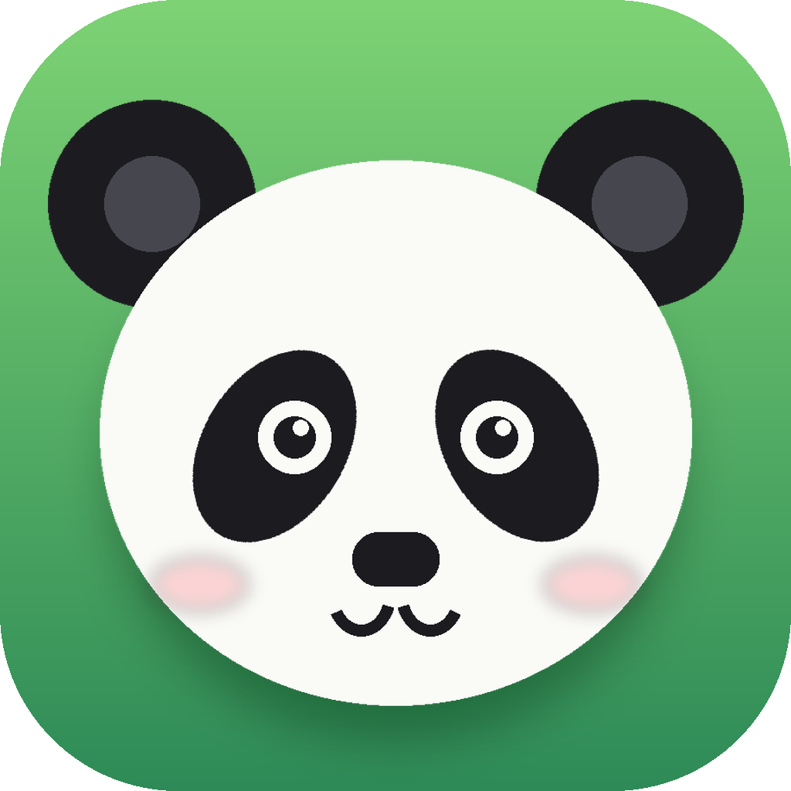

snoozle v1.2.0 · WindowsSnoozle is a small, soft browser with a sleepy panda on the new tab page. Wallpapers, your own gradients, Firefox add-ons and nothing you didn't ask for.
In Snoozle, a gradient wallpaper doesn't stop at the page. It flows right up behind your tabs and toolbar. Go on, try one.
Bamboo groves, starry skies, sunsets, or a photo of your own. Light or dark text sorts itself out.
A whole shelf of colour themes plus light and dark mode. Every corner of the browser follows along.
Search the Firefox add-ons store from inside Snoozle and install extensions like Dark Reader or uBlock Origin Lite.
Snoozle offers to remember logins and keeps them locked with your Windows account.
A bar you can drag into whatever order you like, folders, and a one-click import from Chrome or Edge.
History, cookies and site data vanish the moment you close it.
Mac or Windows style window buttons, an app icon in any colour you like, an optional scroll motion blur, and a panda who is always asleep.